Find channel width-length ratio,  .
.
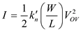
Trans-conductance parameter 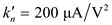
Early voltage 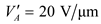
Drain current 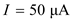
Over drive voltage 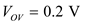 and
Open circuit voltage gain 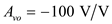
Rewrite the equation.
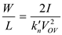
Substitute corresponding values.
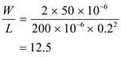
Channel width-length ratio is  .
.
Find trans-conductance, 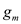.
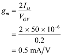
Thus, trans-conductance,  is 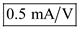
is 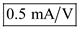

 is 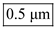.
is 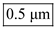.